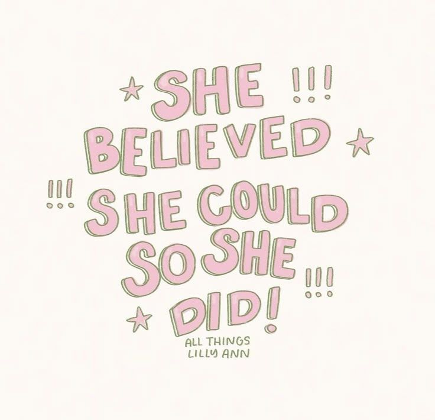
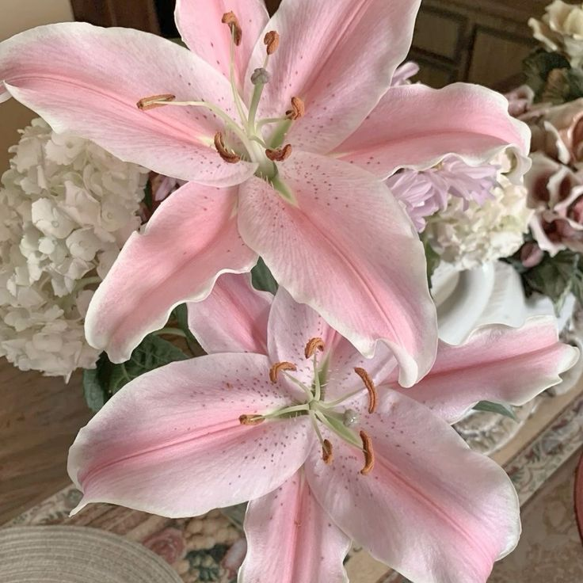
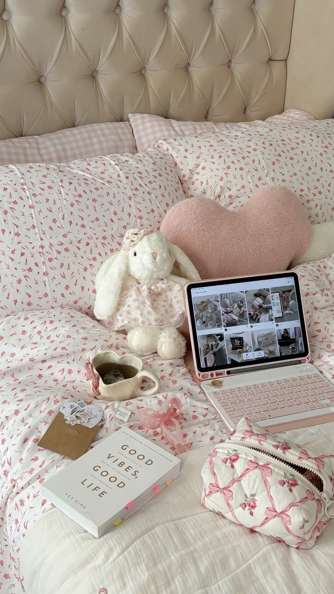
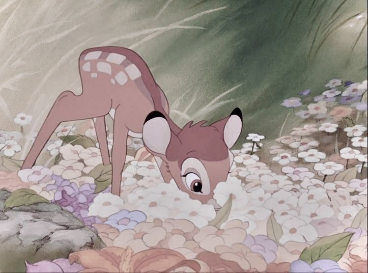

Karya Nyata dari Proses Belajar
Website ini merupakan media pendukung untuk menampilkan hasil Ujian Praktik Terintegrasi. Konten utama pada website ini adalah video broadcasting pembelajaran.
Website ini merupakan website portofolio digital yang berisi hasil karya dan pembelajaran saya selama mengikuti Ujian Praktik.
Topik yang saya pilih adalah 'Eksplorasi Dunia Kerja Melalui Program Internship Curriculum sebagai Bekal Masa Depan' karena menurut saya ini sangat relevan dengan kondisi saat ini.
Selama belajar di SMPIT Al Haraki, saya belajar bahwa teknologi dan kreativitas harus berjalan beriringan.



